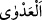
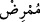
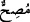

“
”, hastalığın sahibinden başkasına geçmesi demektir. Câhiliye döneminde
Araplar, hastalıkların başkasına kendiliğinden geçtiğine, Allah’ın bunu takdir
etmediğine inanırlardı. Dolayısıyla hadisin mânâsı, hastalığın bir başkasına sirâyet
etmediğini ifade etmek değildir. Çünkü hastalığın başkasına bulaşması bir vâkıadır.
Hadiste nefyedilen husus, bu sirâyet ve geçmeyi hastalığa izafe edip bunun Allah
Teâlâ’nın fiili ile olmadığına inanmaktır.
Buna Peygamber (a.s.)’in: “Hastalıklı deve sahibi (develerini) sağlıklı deve
sahibinin (develerinin) yanına götürmesin.”[139] hadisi delalet eder. Hadiste geçen “
” hasta deve sahibi, “
” ise sağlıklı deve sahibi demektir.
Hadiste hasta devenin, sağlıklı devenin yanına götürülmemesi istenmektedir. Bu,
âfiyette olunduğu zaman hastalık sebebi olan şeylerden sakınma kabilindendir. Bir
mümin nasıl ki kendisini suya veya ateşe atmamak, yıkılmak üzere olan bir şeyin altına
girmemek gibi ölüme sebep olduğu veya kişiye zarar ve eziyet verdiği tecrübeyle sabit
olan şeylerden uzak tutmakla emrolunmuşsa aynı şekilde mesela cüzamlı hastaya
yaklaşmaktan, vebâ bulunan beldeye girmekten kaçınmakla da me’murdur. Çünkü
bunların hepsi hastalığa ve ölüme sebep olan şeylerdir. Şu kadar var ki sebepleri ve
diğer faktörleri yaratan Allah Teâlâ’dır.
Böyle hastalardan uzak durma yönündeki emir, yakîni zayıf olan mümini korumak
içindir. Yani, yakîni zayıf bir mümin hasta olduğu zaman hastalığın tesirinin sebeplerden
olduğuna veya hastalığın sirâyetinin Allah Teâlâ’nın kazâ ve kaderi ile değil de
kendiliğinden olduğuna inanmasın diye bulaşıcı hastalığa yakalananlardan uzak
durmakla emrolunmuştur.
Ama müminin Allah’a tevekkülü tam olur, kazâ ve kadere imanı da kuvvetli olursa bu
sebeplerden bazılarını işlemesi câiz olur. Nitekim Peygamber (a.s.)’ın: “Allah’ın
adıyla, O’na güvendim, O’na tevekkül ettim.” diyerek, cüzzamlı bir hasta ile birlikte
yemek yediği rivayet edilmiştir.[140] Bunun bir benzeri, Hâlid b. Velîd ve Ömer
(r.anhümâ)’nın zehir içtiklerine dair rivayettir. Zehir onlara tesir etmemiştir. Çünkü
onlar zehiri beşeriyet hâlleriyle değil, hakikat makamında içmişlerdir. Peygamber
(a.s.)’daki tesiri ise beşeriyet hâline indikten sonra olmuştur. Şöyle ki:
Peygamber (a.s.)’ın irşadı, tenezzül (bir üst mertebeden alttakine inme) âleminde idi.
Şu kadar var ki onun tenezzülü, mertebelerin en orta hali olan ruh mertebesinden idi.
Üzerinden on iki sene geçtiği halde tesir etmedi. Ölüm vakti yaklaşınca mertebelerin en
düşüğü olan (beşeriyet) mertebesine tenezzül etti. Çünkü ölüm, beşeriyet hali üzere câri
olur. Peygamber Efendimiz bu mertebeye tenezzül edince zehir kendisine tesir etti. Bu
makam çok iyi anlaşılmalı. Çünkü ayakların çokça kaydığı yerlerden birisidir.
“Hâme yoktur.” İfadesinin iki te’vili vardır.
1- Câhiliye Arapları, hâme denilen meşhur bir gece kuşunu uğursuz sayarlardı.
“Hâme”nin, Baykuş olduğunu söylenler de vardır. Bu kuş, birisinin evinin üzerine
konduğu zaman Araplar: “Ev sahibinin veya ailesinden birisinin ölüm haberini getirdi.”